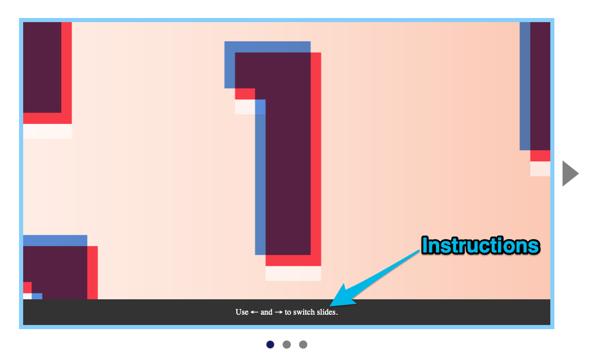
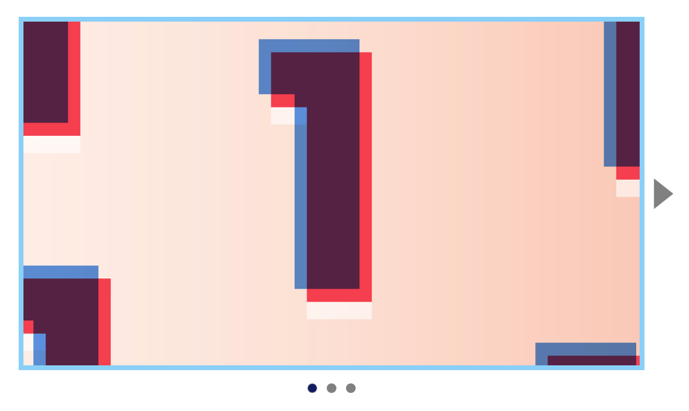

A carousel is a prominent section of a page. It holds content important enough to warrant a landmark role. Of the 8 landmark roles, the only one a carousel can use is region.
This is why we marked up the carousel with a <section> element. (The <section> element has an implicit region role).
<section class="carousel">...</section>
Each landmark should have an accessible name. In this case, let’s use “Carousel” as the accessible name.
We’ll set the accessible name with aria-label since the words “Carousel” cannot be found on the page.
Users can change carousel slides by using the ← and → keys. This method works perfectly for Voiceover users.
Unfortunately, this method won’t work for NVDA users. It doesn’t work for NVDA because NVDA uses → to speak the next character and ← to speak the previous character.
We need to create another method for NVDA users.
You might beat yourself up at this point. You might think you’ve wasted time and energy, and you have to throw away the ← and → functionality.
Don’t beat yourself up. Our work is not wasted. Voiceover users and non-screen reader users can still use ← and → keys. Think of it as an enhancement for them.
We simply have to create a fallback for NVDA users.
Allowing NVDA users to switch slides
We know we cannot use arrow keys for NVDA users. But we also cannot use control, alt, or shift modifiers with arrow keys. They’re all used for other commands.
Key
Command
Left
Say previous character
Right
Say next character
Control + Left
Say previous word
Control + Right
Say next word
Alt + Left
Previous page (browser shortcut)
Alt + Right
Next page (browser shortcut)
Shift + Left
Selects previous character (system shortcut)
Shift + Right
Select next character (system shortcut)
We need a simple way a user can understand and use the interface. The simplest way is let them use the previous and next buttons.
Using previous and next buttons
First, we need to remove the tabindex attribute on the previous and next button elements so users can access them.
Sighted users can see a change happening when they click (or hit Enter on) a button. They can see the carousel move. But blind users can’t. We need to inform them of the change with a live region.
Let’s start by creating a live region within the carousel.
We’ll use an alert role because the information is important and time-sensitive. Users need feedback that something has changed.
Voiceover users would hear the slide live region perfectly:
Unfortunately, NVDA says “alert” if we use the alert role.
This is more of a status change than an “alert”. The “alert” may throw users off. So we’ll switch to a status role with aria-live set to assertive instead.
If a sighted NVDA user uses our carousel, they may try to use ← and → keys to switch slides. They’ll do this because we added instructions for them to do so.

But we know NVDA users cannot use ← and → keys to switch slides. We need to remove this set of instructions for NVDA users.
Unfortunately, there’s no way to detect whether a user is using a screen reader, much less which screen reader they’re using. So we need to remove this set of instructions completely.
<!-- Remove this -->
<div class="carousel__overlay">
Use ← and → to switch slides.
</div>
/* Remove this */
.carousel__overlay { /* ... */ }

Normal users and Voiceover users won’t know about ← and → keys. They’ll have to discover the ← and → shortcuts by themselves.
This is okay because the ← and → shortcuts are enhancements. It’s not critical for users to know about them.
Navigating with “Next Item”
Try navigating through a carousel with a screen reader’s “Next Item” command. The dots and slides will go out of sync.
This is normal.
It happens because screen readers don’t send browsers any events when they use “Next Item”. As a result, browsers can’t send us events too.
We can solve this sync issue by preventing screen readers from “hidden” slides. We can do by:
Setting aria-hidden="true" to other slides
Setting visibility: hidden to other slides
Setting aria-hidden to other slides
The first method is to set aria-hidden="true" true to other slides. When slides change, we switch the aria-hidden="true" property (like roving tabindex).
This works on NVDA.
But there’s a bug on Safari. It shows the last slide.
Since aria-hidden doesn’t solve the problem completely, we’ll use the visibility: hidden method instead.
Setting visibility hidden to other slides
We can hide slides by adding visibility: hidden to them. We’ll only show the selected slide by changing visibility back to visible.
If you pay attention to NVDA’s message, you’ll notice NVDA says: “List with one item”. But when we switch slides, it says “Slide X of 3”.
This is confusing. What does the carousel contain? List items or slides?
The best way to resolve this problem is to remove list semantics by setting role of the list to presentation or none. NVDA won’t say “List with one item” once we do this.
Each link should have an accessible name. This tells users where they will go to.
Normally, the accessible name is the link’s text content. We don’t have text content in this case so create the accessible name with the title attribute.